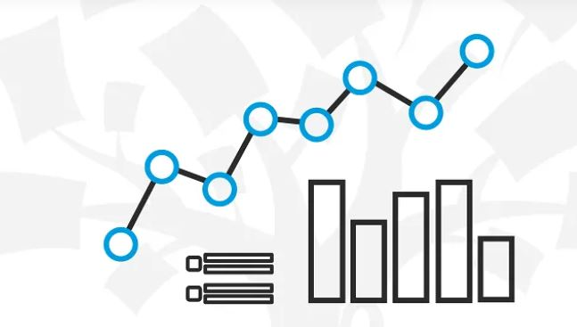

Below are few of the projects I have done for the clients.
The projects includes technologies using but not limited to SQL Server, Jupyter Notebook, Power BI, Python and its libraries such as Numpy, Pandas, Seaborn, Matplotlib, Scikit-Learn & Langchain etc.
Please note that these are just demo to show the idea and actual business context and data has been replaced by open data or hypothetical use cases to protect the clients data:
- Geospatial Data Analysis using Power BI
- NCDB Data Analysis using Power BI
- Q&A Chatbot using LLM
- Data Analysis in Jupyter Notebook
- Data Analysis in SQL Server
- Outliers detection using Z-score in Python
1. Geospatial Data Analysis
In geospatial analysis, we often get the business requirement to show the customers within selected distance of radius from multiple businesses (or points of interest) & also to
differentiate the customers individually in the range of each business and the shared customers which lie within both businesses range.
For the demo of this business requirement, I have used Edmonton playgrounds dataset which is available here.
I have plotted all the playgrounds on the map by using their latitude/ longitude coordinates. For the reference points of interests, I have plotted four
random locations in all zones namely North, South, East & West. User can select two zones and specify the distance of interest.
Playgrounds that lie within the specified distance from 1st zone will be displayed in green, playgrounds which lie in the selected distance from 2nd zone will be displayed in purple,
and those which fulfill the selection criteria for both zones, will appear as yellow.
2. NCDB Collisions Analysis
Power BI Dashboard
This dashboard is based on NCDB, an open dataset for collisions which can be found here. The dataset has records of police reported collisions(1999 to 2017) involving fatality or injury.

This is a basic demo for a project in Python to create a chatbot using open source LLM, Large Language Model.
I used langchain, huggingface and transformers to create a chatbot that can answer any question about my own data. I created a document with brief description about my recent roadtrip to the Arctic, then I asked it a specific question which it answered correctly.
Please note that language models are in the development phase and they require significant fine tuning to work with specific business.
4. Data Analysis in Jupyter Notebook

This is the data analysis of NCDB dataset in Jupyter Notebook, which I used in the 2nd project above to create Power BI dashbard.
5. Data Analysis in SQL Server

This is the data analysis of NCDB dataset in SQL Server, which I used in the 2nd project above to create Power BI dashbard.
6. Outliers detection using Z-score in Python

I have a business requirement to generate reports bi-annually, in the spring and fall. The process is quite complicated that begins with batch loads from Sql Server databases, undergoes extensive transformations as per business needs, which is different each time, and finally loads into the data warehouse. The data warehouse then provides the data to SSRS reports to finally produce the output in required format.
Many times we find very late during the testing phase that something went wrong with the data. It takes a lot of effort to do the data fix and run the procedure again.
One solution I found to mitigate this issue is to use Z-scores to find outliers right after the initial data load, so we can further verify the flagged data to find bugs or bad data.
Below I am using dummy sales data to give a demo. I have created a table with random salesman with their monthly sales amount for 14 years, 2010 to 2024. I will use Z-score to detect any unusually higher or lower sales amount for any given salesman depending on their historical data.